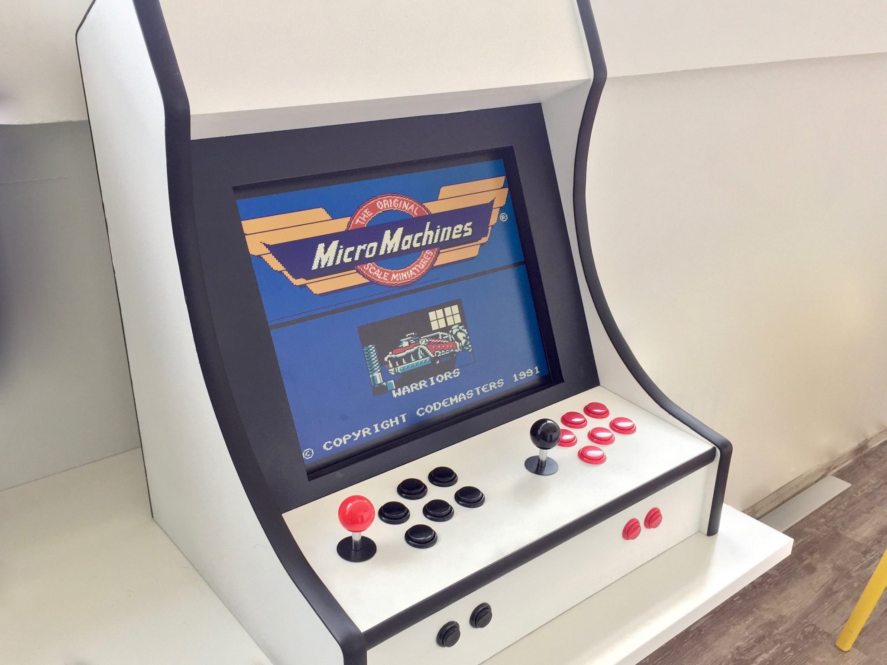

Radosław Bułat
KRUG, grudzień 2016r.
I work at Codest.
We develop webapps but sometimes we make things just for fun.

puts "Hello World!"
arr = [1, 2, 3, 4, 5]
puts "#{arr} includes 3" if arr.includes?(3)
if m = "--123--".match(/(\d+)/)
puts m[0].to_i
end
puts "127.0.0.1".split(".").reverse.join(".")
class Greeter
def initialize(name = "there")
@name = name
end
def salute
puts "Hello #{@name}!"
end
end
Greeter.new("world").salute
Greeter.new.salute
module Mixin
def foo
puts "foo from Mixin called"
end
end
class MyClass
include Mixin
end
MyClass.new.foo
def twice
yield "here"
yield "there"
end
twice { |s| puts "Hello #{s}!" }
f = -> { puts "Proc called" }
twice(&f)
puts 1.upto(999)
.select { |e| e % 3 == 0 || e % 5 == 0 }
.reduce { |acc, e| acc + e }
File.open("/etc/hosts") do |file|
file.each_line { |line| puts line }
end
Array, String, Class, Enumerable, Comparable, ENV, File, Hash, Nil, Range, Regex...
a = 1 # Int32
puts a + 123 # Int32#+(Int32) exists
$ crystal build type_inference1.cr
$ ./type_inference1
124
a = 1 # Int32
puts a + "123" # Int32#+(String) - doesn't exist
$ crystal build type_inference2.cr
Error in type_inference2.cr:2: no overload matches 'Int32#+' with type String
Overloads are:
- Int32#+(other : Int8)
- Int32#+(other : Int16)
- Int32#+(other : Int32)
- Int32#+(other : Int64)
- Int32#+(other : UInt8)
- Int32#+(other : UInt16)
- Int32#+(other : UInt32)
- Int32#+(other : UInt64)
- Int32#+(other : Float32)
- Int32#+(other : Float64)
- Number#+()
puts a + "123"
^
a = (rand(2) == 0 ? 1 : "1") # Int32 | String
puts a * 2 # both Int32#*(Int32)
# and String#*(Int32) exist
$ crystal run type_inference3.cr
2
$ crystal run type_inference3.cr
11
a = (rand(2) == 0 ? 1 : "1") # Int32 | String
puts a.abs # String#abs doesn't exist
$ crystal build type_inference4.cr
Error in type_inference4.cr:2: undefined method 'abs' for String
(compile-time type is (Int32 | String))
puts a.abs
^~~
a = (rand(2) == 0 ? 1 : "1") # Int32 | String
if a.is_a?(Int32)
puts a.abs # Int32#abs
end
def add(a : Int32, b : Int32)
a + b
end
puts add(10, 20)
30
foobar
def add(a : Int32, b : Int32)
a + b
end
puts add("foo", "bar")
Error in type_inference7.cr:5: no overload matches 'add' with types String, String
Overloads are:
- add(a : Int32, b : Int32)
puts add("foo", "bar")
^~~
def add(a, b)
a + b
end
puts add(10, 20)
puts add("foo", "bar")
30
foobar
def add(a, b)
a + b
end
puts add(true, false)
Error in type_inference9.cr:5: instantiating 'add(Bool, Bool)'
puts add(true, false)
^~~
in type_inference9.cr:2: undefined method '+' for Bool
a + b
^
loop do
word = gets
break if word.upcase =~ /^QUIT/
puts word.chomp.reverse
end
$ ruby nil.cr
foo
oof
bar
rab
^D
nil.cr:3:in `block in <main>': undefined method `upcase' for nil:NilClass (NoMethodError)
$ crystal build nil.cr
in nil.cr:1: instantiating 'loop()'
loop do
^~~~
in nil.cr:3: undefined method 'upcase' for Nil (compile-time type is (String | Nil))
break if word.upcase =~ /^QUIT/
^~~~~~
loop do
word = gets
break if word.nil? || word.upcase =~ /^QUIT/
puts word.chomp.reverse
end
$ crystal run nil-fix.cr
foo
oof
bar
rab
^D
What is the smallest number that is evenly divisible by all of the numbers from 1 to 20?
puts 1.upto((2..20).reduce(:*))
.each { |n| break n if (2..20).all? { |e| n % e == 0 } }
$ time ruby euler.rb
232792560
ruby euler.rb 115,36s user 0,80s system 95% cpu 2:01,88 total
puts 1.upto((2..20).reduce(1_u64) { |acc, e| acc * e })
.each { |n| break n if (2..20).all? { |e| n % e == 0 } }
$ crystal build --release euler.cr && time ./euler
232792560
./euler 1,65s user 0,01s system 98% cpu 1,679 total
require "kemal"
logging false
get "/" do
"Hello World"
end
Kemal.run
require "sinatra"
set :logging, false
get "/" do
"Hello world"
end
Requests/sec: 63258.85 Transfer/sec: 7.24MB
Requests/sec: 3344.73 Transfer/sec: 601.04KB
require "benchmark"
arr = (1..100_000_000).to_a.shuffle
puts Benchmark.measure { arr.sort! }
$ ruby array_bm.cr
28.890000 1.190000 30.080000 ( 31.266588)
$ crystal run --release array_bm.cr
9.890000 0.040000 9.930000 ( 10.187163)
{% puts "This runs during compilation" %}
puts "This runs during execution"
$ crystal build macro1.cr
"This runs during compilation"
$ ./macro1
This runs during execution
macro define_method(name, body)
def {{name}}
{{body}}
end
end
class Foo
define_method bar, "baz"
# def bar
# "baz"
# end
end
macro assert(assertion)
unless {{assertion}}
puts "Assertion {{assertion}} failed!"
end
end
assert 1 == 2
$ crystal run macro3.cr
Assertion 1 == 2 failed!
class Person < ActiveRecord::Model
adapter postgres
table_name people
primary id : Int
field last_name : String
field first_name : String
field number_of_dependents : Int
end